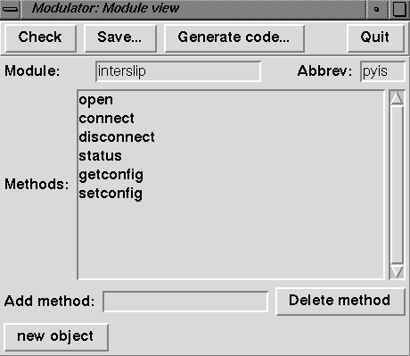

Next, you need a python source
distribution. For PowerPC and cfm68k development you can actually
get by without a full source distribution, using the Development
distribution. You'll also need a functional python interpreter, and
the Modulator program (which lives in Tools:Modulator in
the standard source distribution). You may also find that Guido's Extending and embedding
the Python interpreter is a very handy piece of documentation. I
will skip lots of details that are handled there, like complete
descriptions of Py_ParseTuple and such utility routines, or
the general structure of extension modules.
I happened to have a C interface to the API, which is all ugly low-level device-driver calls by itself. The C interface is in InterslipLib.c and InterslipLib.h, we'll concentrate here on how to build the Python wrapper module around it. Note that this is the "normal" situation when you are writing a Python extension module: you have some sort of functionality available to C programmers and want to make a Python interface to it.
First, let us look at the InterslipLib.h header file,
and see that the whole interface consists of six routines:
is_open, is_connect,
is_disconnect, is_status,
is_getconfig and is_setconfig. Our first
step will be to create a skeleton file @interslipmodule.c, a
dummy module that will contain all the glue code that python expects
of an extension module. Creating this glue code is a breeze with
modulator, a tool that we only have to tell that we want to create a
module with methods of the six names above and that will create the
complete skeleton C code for us.
Why call this dummy module @interslipmodule.c and not
interslipmodule.c? Self-preservation: if ever you happen
to repeat the whole process after you have actually turned the
skeleton module into a real module you would overwrite your
hand-written code. By calling the dummy module a different name you
have to make two mistakes in a row before you do this.
If you installed Tk support when you installed Python this is extremely simple. You start modulator and are provided with a form in which you fill out the details of the module you are creating.

You'll need to supply a module name (interslip, in our
case), a module abbreviation (pyis, which is used as a
prefix to all the routines and data structures modulator will create
for you) and you enter the names of all the methods your module will
export (the list above, with is_ stripped off). Note that
we use pyis as the prefix instead of the more logical
is, since the latter would cause our routine names to
collide with those in the API we are interfacing to! The method names
are the names as seen by the python program, and the C routine names
will have the prefix and an underscore prepended. Modulator can do
much more, like generating code for objects and such, but that is a
topic for a later example.
Once you have told modulator all about the module you want to create you press "check", which checks that you haven't omitted any information and "Generate code". This will prompt you for a C output file and generate your module for you.
import addpack
addpack.addpack('Tools')
addpack.addpack('modulator')
import genmodule
m = genmodule.module()
m.name = 'interslip'
m.abbrev = 'pyis'
m.methodlist = ['open', 'connect', 'disconnect', 'status', \
'getconfig', 'setconfig']
m.objects = []
fp = open('@interslipmodule.c', 'w')
genmodule.write(fp, m)
Now, rename the file to interslipmodule.c and you're all set to start developing. The module is complete in the sense that it should compile, and that if you import it in a python program you will see all the methods. It is, of course, not yet complete in a functional way...
extern void initinterslip();
{"interslip", initinterslip},
#ifdef USE_INTERSLIP
#endif
#define USE_INTERSLIP
Go to the "PlugIns" folder and copy the files xx.prj, and xx.prj.exp to interslipmodule.prj and interslipmodule.prj.exp, respectively. Edit interslipmodule.prj.exp and change the name of the exported routine "initxx" to "initinterslip". Open interslipmodule.prj with CodeWarrior, remove the file xxmodule.c and add interslipmodule.c and make a number of adjustments to the preferences:
PythonCore. The installation process has deposited this
file in the System Extensions folder under the name
PythonCore version. Add that file to the project, replacing
PythonCore.
We add
#include "InterslipLib.h"
#include "macglue.h"
interslip.open.__doc__. There are not many tools using
this information at the moment, but as soon as class browsers for
python become available having this minimal documentation available is
a good idea. We put "Load the interslip driver" as the comment
here.
Next, we tackle the body of pyis_open(). Since it has no
arguments and no return value we don't need to mess with that, we just
have to add a call to is_open() and check the return for
an error code, in which case we raise an error:
err = is_open();
if ( err ) {
PyErr_Mac(ErrorObject, err);
return NULL;
}
PyErr_Mac() is a
useful routine that raises the exception passed as its first
argument. The data passed with the exception is based on the standard
MacOS error code given, and PyErr_Mac() attempts to locate a textual
description of the error code (which sure beats the "error -14021"
messages that so many macintosh applications tell their poor
users).
We will skip pyis_connect and pyis_disconnect here, which are pretty much identical to pyis_open: no arguments, no return value, just a call and an error check. With pyis_status() things get interesting again: this call still takes 3 arguments, and all happen to be values returned (a numeric connection status indicator, a message sequence number and a pointer to the message itself, in MacOS pascal-style string form). We declare variables to receive the returned values, do the call, check the error and format the return value.
Building the return value is done using Py_BuildValue:
return Py_BuildValue("iiO&", (int)status, (int)seqnum, PyMac_BuildStr255, message);
printf()
works. The format string specifies the arguments expected after the
string, and turns them from C objects into python objects. The
resulting objects are put in a python tuple object and returned. The
"i" format specifier signifies an "int" (hence the cast: status and
seqnum are declared as "long", which is what the is_status() routine
wants, and even though we use a 4-byte project there is really no
reason not to put the cast here). Py_BuildValue and its counterpart
Py_ParseTuple have format codes for all the common C types like ints,
shorts, C-strings, floats, etc. Also, there is a nifty escape
mechanism to format values about which is does not know. This is
invoked by the "O&" format: it expects two arguments, a routine
pointer and an int-sized data object. The routine is called with the
object as a parameter and it should return a python objects
representing the data. Macglue.h declares a number of
such formatting routines for common MacOS objects like Str255, FSSpec,
OSType, Rect, etc. See the comments in the include file for
details.
Pyis_getconfig() is again similar to pyis_getstatus, only
two minor points are worth noting here. First, the C API return the
input and output baudrate squashed together into a single 4-byte
long. We separate them out before returning the result to
python. Second, whereas the status call returned us a pointer to a
Str255 it kept we are responsible for allocating the
Str255 for getconfig. This is something that would have
been easy to get wrong had we not used prototypes everywhere. Morale:
always try to include the header files for interfaces to libraries and
other stuff, so that the compiler can catch any mistakes you make.
Pyis_setconfig() finally shows off
Py_ParseTuple, the companion function to
Py_BuildValue. You pass it the argument tuple "args"
that your method gets as its second argument, a format string and
pointers to where you want the arguments stored. Again, standard C
types such as strings and integers Py_ParseTuple knows all about and
through the "O&" format you can extend the functionality. For each
"O&" you pass a function pointer and a pointer to a data area. The
function will be called with a PyObject pointer and your data pointer
and it should convert the python object to the correct C type. It
should return 1 on success and 0 on failure. Again, a number of
converters for standard MacOS types are provided, and declared in
macglue.h.
Next in our source file comes the method table for our module, which
has been generated by modulator (and it did a good job too!), but
which is worth looking at for a moment. Entries are of the form
{"open", pyis_open, 1, pyis_open__doc__},
getargs(args, "(ii)",
...) you will have to put zero here. See "extending and
embedding" or possibly the getargs.c source file for details if you
need them.
Finally, we add some code to the init module, to put some symbolic
constants (codes that can by returned by the status method) in the
module dictionary, so the python program can use "interslip.RUN"
instead of the cryptic "4" when it wants to check that the interslip
driver is in RUN state. Modulator has already generated code to get at
the module dictionary using PyModule_GetDict() to store the exception
object, so we simply call
PyDict_SetItemString(d, "IDLE", PyInt_FromLong(IS_IDLE));
PyErr_Occurred() and
since PyDict_SetItemString() gracefully handles the case
of NULL parameters (if PyInt_FromLong()
failed, for instance) we don't have to do error checking here. In some
other cases you may have to do error checking yourself.
This concludes our crash-course on writing Python extensions in C on the Macintosh. If you are not done reading yet I suggest you look back at the MacPython Crashcourse index to find another topic to study.